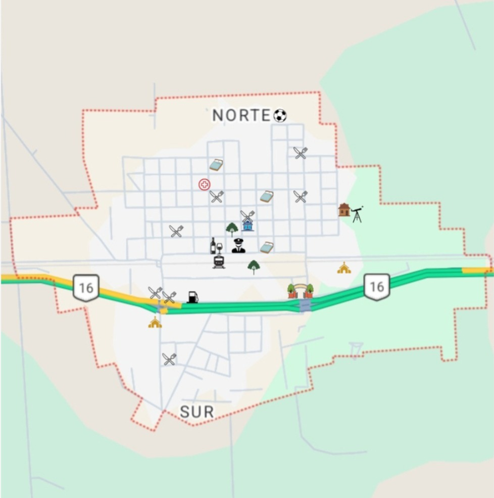
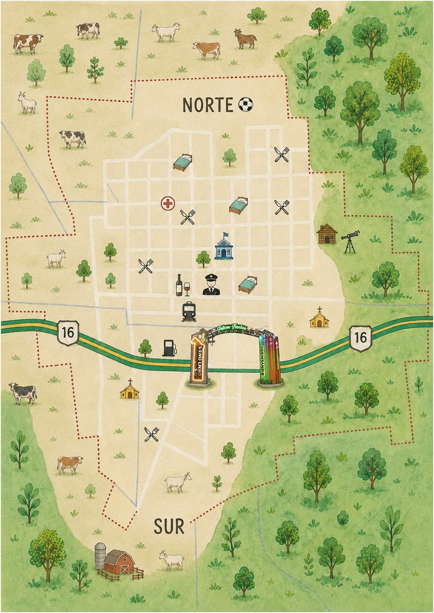

-Historia: La localidad, originalmente fue habitada por pueblos originarios del grupo guaycurú entre ellos los abipones. Eran comunidades nómadas que vivían de la caza y la recolección, se organizaban en pequeños grupos familiares y conocían profundamente el monte chaqueño, utilizando arcos y flechas como herramientas de subsistencia. Durante la etapa colonial, este territorio fue de difícil control para los españoles, ya que estos pueblos ofrecieron resistencia durante mucho tiempo y mantuvieron gran parte de sus formas de vida tradicionales. Con el paso de los años, la expansión de la colonización, las misiones religiosas y luego el avance de la ocupación criolla fueron transformando la región. Mucho después, con el desarrollo del ferrocarril y la apertura de caminos en el siglo XX, comenzó a consolidarse la localidad de Los Frentones, teniendo su fundación en la década de 1930 (alrededor de 1936), cuando empezó a crecer como punto de asentamiento vinculado a la actividad forestal y al desarrollo regional. Los Frentones se encuentra en el noroeste de la provincia del Chaco, dentro del departamento Almirante Brown, sobre la Ruta Nacional Nº16, uno de los principales corredores del norte argentino. Su ubicación permite una conexión ágil con ciudades como Presidencia Roque Sáenz Peña y San Miguel de Tucuman. La localidad posee un clima subtropical, con veranos calurosos e inviernos suaves. Actividades económicas principales se basa principalmente en la agricultura (soja, algodón, maíz y girasol), la ganadería bovina y la actividad forestal. Además, se destaca la fabricación artesanal de hornos de barro. En los frentones se puede recorrer el pueblo, paisajes rurales, observación de flora y fauna, atardeceres y cielos estrellados, tradiciones y cultura local Se encuentra: La plaza principal, la Iglesia, Municipalidad, Monumentos, Caminos rurales panorámicos, miradores, zonas recomendadas para ver el cielo nocturno.
VOLVER AL INICIO
